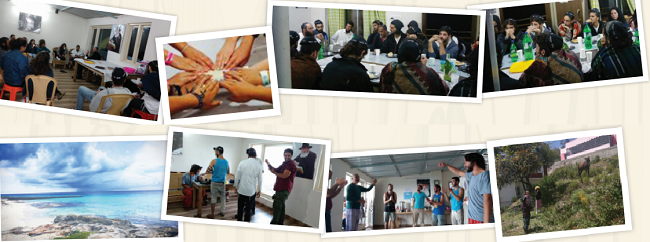

Welcome to the World of Shlichus-Shluchos
Behind every successful shliach stands a shlucha who spurs him on, encourages him, and takes an active part in their joint Geula enterprise. * A glimpse into the colorful world of three young shluchos .
By Esti Lenchner

Mother of two daughters
Cozumel, Mexico
Cozumel is a picturesque island in the Caribbean Sea that lies on the eastern coast of Mexico. It’s a beautiful place which is known as the Garden of Eden of the Caribbean. Of course, it is a popular tourist spot in Central America and attracts tens of thousands of Israeli tourists every year.
The Chabad House was founded eight years ago by my husband, Rabbi Dudi Caplin, with his friend R’ Shlomi Peleg, when they were single. They run it today too, as married men. In the beginning, the Chabad House lacked basic resources and it looked as though the dream of a big Chabad House would not be realized. Over the years, the Chabad House underwent many birth pangs until it reached today’s state. Now it operates around the clock and is located in a large, beautiful building in the town square, that used to serve as a government building. Throughout the city there are four kosher restaurants with extensive menus, and there are exquisite mikvaos and wide-ranging programming.
I WAS BORN TO SHLICHUS
Since I remember, I knew I would go on shlichus. When I reached marriageable age, I made sure to stress to my parents that going on shlichus was a prerequisite for meeting with someone. When I met my husband, we were happy that we had the same ambitions and ideals to live a life of shlichus, of action and providing nachas ruach to the Rebbe. Four months after our wedding, we flew to Cozumel.
Life on the island is very different than life in Eretz Yisroel. A lot of the food is imported. For example, the milk that is imported is [treated with high heat to make it] shelf stable, with which you cannot make cheeses and other dairy concoctions. So I supervise milking, which mostly takes place in the middle of the night, and after a long cleaning and pasteurizing process, I make various dairy goodies.
SONG FROM THE HEART
Since I remember, I’ve always been singing. Throughout my childhood, I found opportunities to sing, like school performances and N’shei Chabad gatherings. After I got married, I shelved singing and focused on Chabad House activities. I didn’t dare to sing and didn’t know how tourists would look at it. I thought, what songs can I sing for the girls and women? I don’t know the music they listen to …
But with the encouragement of my husband, I decided to try. He maintained, and rightly so, that my ability to sing is a great kiruv tool.
One day, there were only girls in the Chabad House and I considered it an opportunity. While having heart to heart talks about missing home, the family back in Eretz Yisroel, I sang a moving song about Ima. They all shed a tear but one of the girls sobbed. Once she calmed down, she told us that she had recently lost her mother and she had never cried about it, even when she heard about the terrible tragedy. Something inside her was blocked and the pain was a heavy burden she bore. “Your singing released all the pain,” she said emotionally.
I suddenly realized that I have a tremendous power and I must make use of it. Being the “rabbanit” of the Chabad House is not a contradiction to singing! Soon, I will be coming out with a performance for Chabad Houses that includes songs and stories from life on shlichus.
SCHOOL FOR TOURISTS
Last summer, we started a seminary program for female tourists after getting an amazing bracha from the Rebbe. It started with a few girls that we have at the Chabad House and developed into a curriculum with dormitory facilities. It includes learning in the morning and helping at the Chabad House in the afternoon. Today, we have a few girls who have gone to seminary in Eretz Yisroel and also went to the Rebbe.
We have had women passing through here who committed to family purity, Shabbos, and tznius while we separated challa that we make at the Chabad House. These souls that return to Judaism are the greatest affirmation to our shlichus.
Liat Shamir
Mother of seven
Vattakanal, India
Vattakanal is an out of the way village on a high mountain in southern India. The roads that get you there are winding and very long and yet, it is a destination for thousands of Israelis. It’s a beautiful place that lies above the clouds! The scenery out our window is absolutely breathtaking.
We have been operating a Chabad House for nine years, since we came shortly after our wedding. The work is seasonal and takes place only in the winter, because in the summer season you can’t hike as the heat is oppressive. So we spend half a year here and half a year in Eretz Yisroel.
CHINUCH
Thank G-d we have recently gotten two fabulous gifts, a set of twins. In thanks to the Rebbe, we named them for his parents, Levi Yitzchok and Chana. Boruch Hashem, I have a large family and the children’s chinuch is no less important than the outreach work we do. We bring teachers every year to teach the children. When we are in Eretz Yisroel, the children are in regular schools in Natzrat Ilit, and they enjoy the company of other Lubavitcher children who lovingly welcome them to their class.
MY SHLICHUS
As a baalas teshuva, I never imagined that one day I would find myself living on a mountaintop in India. This is definitely not my style. But Hashem runs the world and I became a shlucha in the most unexpected of places, as far as I’m concerned.
SHLIACH OSEH SHLIACH
Once, during a Shabbos meal, we went around the room asking for good hachlatos. There were those who committed to big things and those who didn’t want to commit to anything. I remember two girls in particular. One of them decided to start lighting Shabbos candles. For her this was a big deal because she comes from a background that is very distant from religious observance. The other girl, who came with her husband, committed to covering her hair at least once a week and the next day, she showed up at the Chabad House with her hair covered.
Many years later, the girl who had committed to lighting candles is still doing so. The other woman is a Lubavitcher woman today who wears a wig.
THE REBBE ALWAYS COMES THROUGH
Life on shlichus is difficult, with endless challenges. We don’t always immediately see the fruits and sometimes it’s possible to forget, and to ask oneself, why am I here? What is this good for? But the Rebbe always comes through. He sends us marvelous regards from our work, and the positives are tremendous despite the difficulties.
We are in Eretz Yisroel now. It is not possible to go back to India now with two infants. After consulting with rabbanim and mashpiim, and an explicit bracha from the Rebbe, we decided to extend our stay here and send replacements for the upcoming season.
Although life in Eretz Yisroel is much more comfortable, certainly with twin infants, it is hard for me when I think that we won’t be in India on shlichus for the next season. I have already started work on arranging Chassidus classes in our area; shlichus just burns in our veins.
THE HEART OF THE HOUSE
On shlichus, numerous situations arise in which you need to combine the mind and the heart, like making vital decisions or noticing that a tourist needs an engaging answer to his questions, yet he needs it to be packaged with love, and here is where I feel my contribution much more strongly. Boruch Hashem, I was gifted with the ability to size people up immediately and identify their emotional need.
I remember a situation that took place one Shabbos, one of the tourists was fussing with the candles and my husband politely asked him not to touch them. Something in the eyes of that tourist moved me and I said to my husband, “Pay attention; try to see what his neshama is crying out. It’s a very special soul. I’m telling you, he’ll be a Chabadnik one day.” Sure enough, this bachur is now a Tamim.
THE ONLY SHLICHUS
Nearly everyone who enters the Chabad House asks us our purpose in being there. The answer that I always give is very candid and detailed: the need for Moshiach in the world is so great that the Baal Shem Tov would walk around the marketplaces and seek Jews in spiritual distress. I tell them about his ascending to the chamber of Moshiach up Above with the question, “When are you coming?” and Moshiach’s answer, “When your wellsprings spread outward.” And then the chain of the generations until the Rebbe MH”M. In the end, everyone understands what our goal is. Our goal here is to bring Moshiach!
Chana Soriano
Mother of three daughters
Concordia, Argentina
Concordia is a pretty city with numerous waterfalls, hot springs and lakes. The place where we live is reminiscent of a little village in the time of the Baal Shem Tov. People live in huts, travel with horse and wagon, the children go about barefoot, and all is simple, relaxed and happy. We are considered rich by the locals.
BIRTH PANGS
We came here two years ago when I was in my eighth month of pregnancy. Although to many, including my family, this move was surprising, especially in light of the fact that medicine here is not exactly advanced, we decided not to forgo the opportunity to go on shlichus. It was clear to us that when you go with the Rebbe’s instructions, you see miracles (and we really do; we are already working on obtaining donations to complete a building for a Chabad House that will have a mikva and kosher store).
As soon as we landed, we started outreach. My husband began serving as rav of the community and gave shiurim to children, boys, students, and adults. I opened a preschool and school for Jewish children.
I was soon to give birth and was feeling nervous. How would I go through the birth on my own? How would I be able to respond to the doctors when I knew only a few words in Spanish? And how would I manage with the primitive medicine? In Concordia you can’t get an epidural. If you want one, you have to order it well in advance and it entails complicated bureaucracy. There was no choice but to give birth without any painkillers. Furthermore, there are hardly any advanced machines like ultrasound. Also, here the accepted thing is to bring everything the baby will need, even the diapers and clothing you will put on the baby after it is born, which meant that every time I left the house, I had to take my whole birthing suitcase with the necessary provisions. I was nervous, but I knew the Rebbe would not leave me on my own.
A few days before giving birth, the first night of Chanuka, my husband met an Israeli woman who immigrated here. She heard about the imminent birth and told him that she is a doula by profession and she would be happy to accompany me to the birth. Of course I agreed. This amazing woman even connected me with a Jewish doctor and I went through the birth calmly and happily.
THE POWER OF A MEZUZA
On a street corner in the center of town, there is a store with a Jewish owner. The woman who owns the store asked us to put up a mezuza.
The store is located at a sharp turn, which occasionally caused cars to crash into the storefront windows and break them. We went right over, and after putting up the mezuza a feeling of peace descended on the little store. Two days later, a speeding car turned over and rolled until the entrance to the store. It stopped centimeters away from the doorway. The glass that remained intact testified to the fact that the mezuza protects and guards.
CHALLENGES
Life on shlichus has us handling situations which we would never encounter in Eretz Yisroel, like getting stuck in traffic behind horses, or flooding coming up from the ancient sewer system. In addition, there is getting used to different norms. For example, it is not the practice here to ring the bell or knock on the door; when a person wants to enter your house, he … claps his hands. When I hear hand-clapping, I go outside to see who is at the door.
MESIRUS NEFESH FOR A MITZVA
It’s a seven-hour trip to get to a mikva.
Our only source of food is what we cook in our Chabad House. There is no such thing as buying food out of the house and eating in a restaurant. If we don’t cook and bake it ourselves, there won’t be food!
Before Rosh Hashana, fish was not available. I could not bear the thought of Yom Tov without fish, in addition to which, my menu wouldn’t be as varied.
A few hours before Yom Tov, as a last attempt, I asked the maid to go and look for fish in the market. I knew that Hashem would not allow us to enter Yom Tov without one of the main simanim, and after a series of miracles, I found myself in the kitchen with a pile of flapping fish that were just pulled out of the sea.
We live in the atmosphere of shlichus every day, hour by hour, waiting and anticipating to join the third Beis HaMikdash now!
THE ONLY SHLICHUS
All our work revolves around the only goal and shlichus that remains for us in galus, which is to bring Moshiach. It happens that people ask, what brings us to this far-off place when we can spread the wellsprings in Eretz Yisroel too. We always answer, “The Rebbe sent us for you! Because you are here, we are here too!”
Saying this immediately opens people’s hearts and provides a step up to the next rung. We tell them the Geula is imminent thanks to their small deeds: kashrus, mezuza, tefilla … Every encounter with a Jew is an opportunity to talk about Moshiach.
Beis Moshiach (staff). "Welcome to the World of Shlichus-Shluchos." Beis Moshiach, no. 1098 (December 20, 2017).